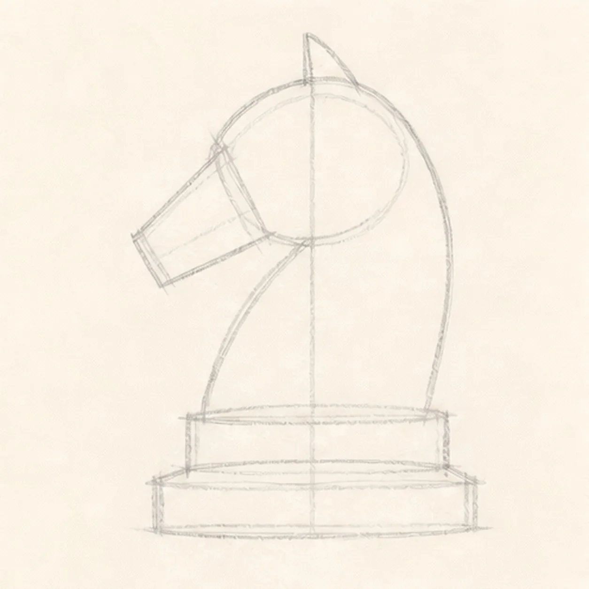
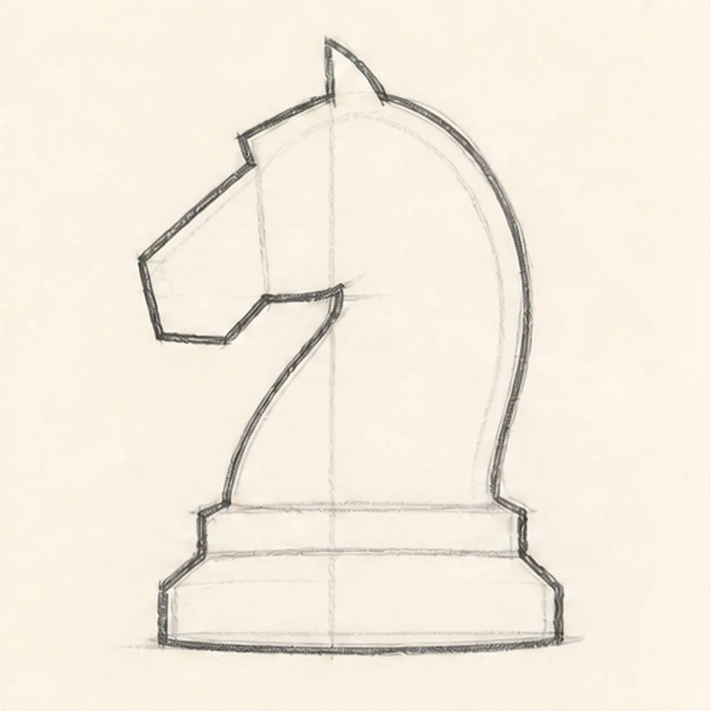
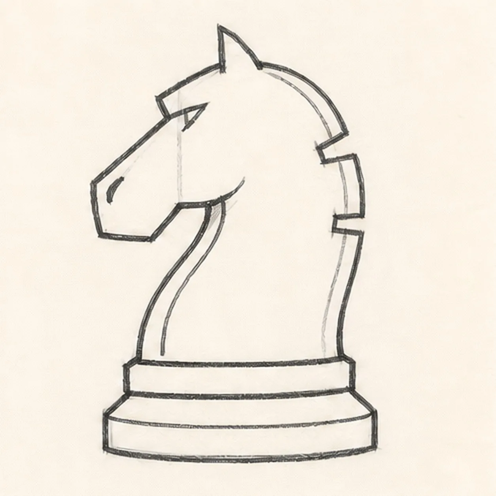
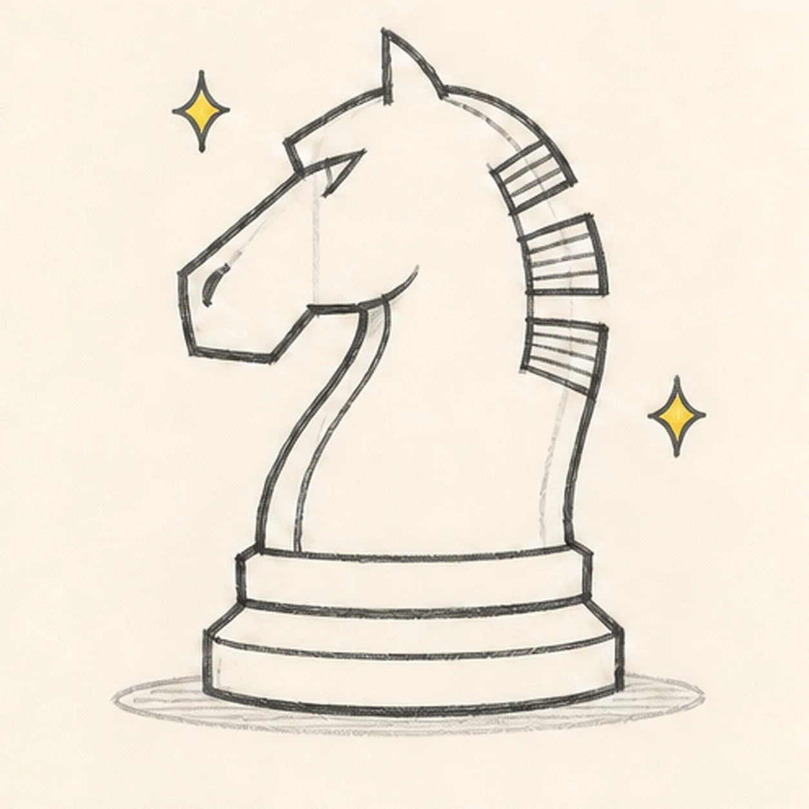
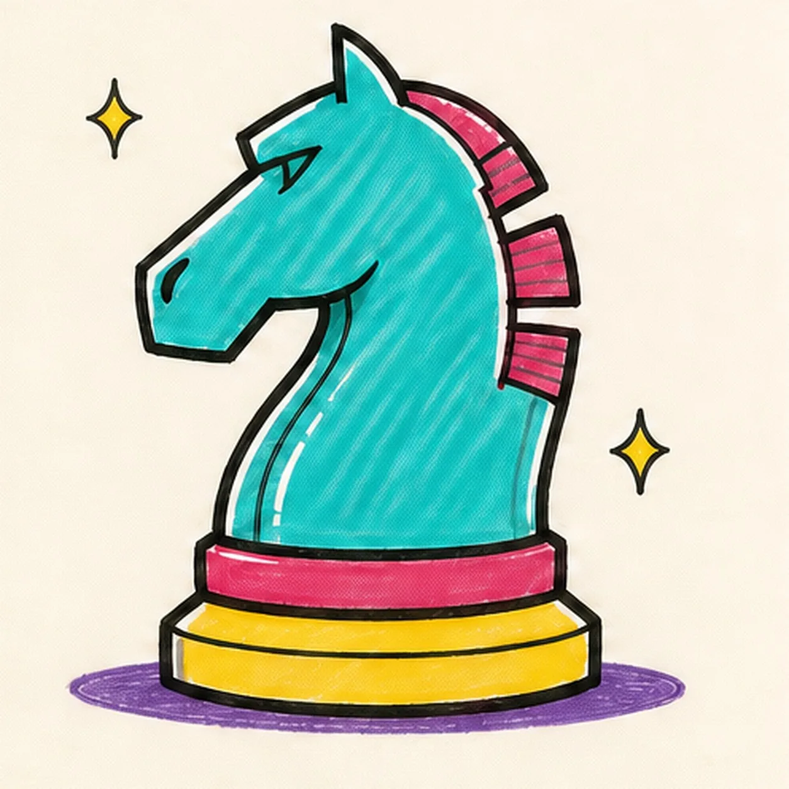

Marker ready?
Let's draw a chess knight
Treat this as one playful practice round: sketch the idea loosely, simplify the shapes, then commit with confident marker outlines and bright fills.
-
01

Set the knight guides
Draw a light horse-head arc, add a blocky muzzle wedge and sweeping neck, then stack two centered pedestal guides below it.
Marker tip: Ghost the head-to-neck sweep twice before touching down. Compare the empty hook beneath the muzzle with the outer neck curve so the profile does not feel cramped.
-
02

Shape the chess-piece silhouette
Wrap the guides with one pointed ear, blocky muzzle, arched neck, and wide pedestal to make a clear left-facing knight.
Marker tip: Rotate the page for the long back curve and pull it in one confident stroke. Keep the head and base on the same center axis so the piece feels planted.
-
03

Carve the knight details
Add the mane notch and three chunky mane blocks, then place the abstract brow cut, nostril groove, inner neck contour, and two base bands.
Marker tip: Break the outer line cleanly around each mane block instead of drawing through it. Keep the brow and nostril as simple carved notches—no eyeball or smiling face is needed.
-
04

Add mane rhythm and sparks
Draw short hatch marks across the three mane blocks, add exactly two small spark accents, and place one shallow oval shadow beneath the base.
Marker tip: Aim the hatch marks with each mane block rather than making a flat row. You can vary their spacing while keeping both sparks clear of the knight outline.
-
05

Ink and color the knight
Thicken every established contour, fill the body turquoise, the mane and upper band raspberry, the lower pedestal yellow, the sparks yellow, and the shadow violet.
Marker tip: Pull the turquoise strokes down the neck curve and leave narrow paper gaps as shine. Let each bright area dry before reinforcing its black edge so the colors stay clean.
-
06

Make the knight game-ready
Strengthen the keeper outlines and clarify the established silhouette, carved details, mane blocks, hatch marks, base bands, two sparks, marker fills, highlights, and shadow.
Marker tip: Count three mane blocks and two sparks, then stop. A board, second piece, crown, lettering, character face, sticker edge, or badge frame would crowd the strong single-piece silhouette.